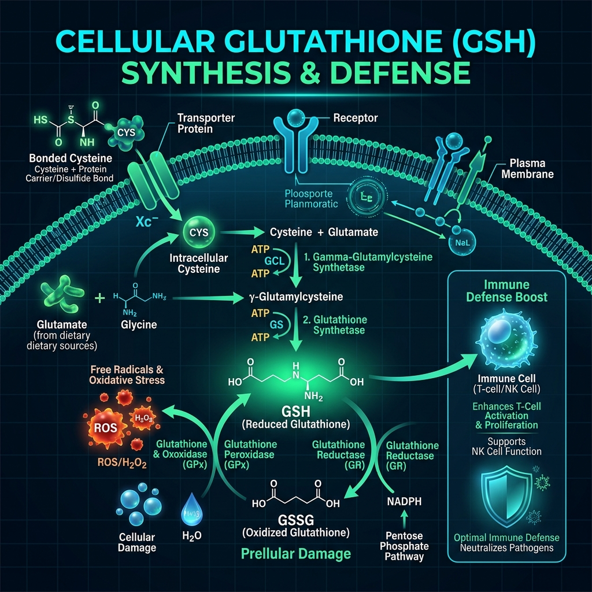

¿Por qué Inmunocal Marca la Diferencia? Why Does Immunocal Make the Difference?
Aunque en el mercado existen alternativas como la N-Acetilcisteína (NAC) o precursores genéricos, Inmunocal destaca por su formulación "Todo en Uno", su biodisponibilidad y sus patentes clínicas únicas. While alternatives like N-Acetylcysteine (NAC) exist, Immunocal stands out for its all-in-one formulation, bioavailability, and unique clinical patents.
Cisteína Enlazada Protegida Protected Bonded Cysteine
La cisteína común se destruye en el estómago. Inmunocal utiliza proteína bioactiva no desnaturalizada que llega intacta al torrente sanguíneo. Standard cysteine breaks down in stomach acid. Immunocal uses undenatured bioactive protein that reaches the bloodstream intact.
Experiencia "Todo en Uno" "All-in-One" Experience
Fórmula completa de proteínas suero-lácteas de altísimo valor biológico, excelente palatabilidad y digestibilidad superior sin molestias estomacales. Complete whey protein isolate with supreme biological value, great palatability, and smooth digestion without stomach distress.
Listado en el PDR Médico Listed in Medical PDR
Aparece citado en el Physicians' Desk Reference (PDR) de EE.UU. y en el CPS canadiense como nutracéutico probado para la salud humana. Referenced in the US Physicians' Desk Reference (PDR) and Canadian CPS as a proven nutraceutical for human health.
¿Cómo actúan las células al elevar el Glutatión? How Cells Respond to Raised Glutathione?
El glutatión (GSH) no se puede tomar directamente en pastillas porque la digestión lo degrada. La única vía efectiva es entregar a la célula la Cisteína Enlazada necesaria para que la mitocondria fabrique su propio glutatión natural. Glutathione (GSH) cannot be taken directly as a pill as digestion breaks it down. The only effective route is delivering Bonded Cysteine to cells so mitochondria synthesize their own natural glutathione.
- Neutralización masiva de Radicales Libres y Estrés Oxidativo Massive Free Radical & Oxidative Stress Neutralization
- Desintoxicación profunda a nivel hepático y renal Deep liver and kidney cellular detoxification
- Optimización del rendimiento físico y la energía biológica Optimization of physical performance and bio-energy

Más de 75 Patentes e Investigaciones Clínicas Over 75 Patents & Clinical Studies
Inmunocal no es una moda pasajera: cuenta con más de 45 años de investigación clínica por científicos de la Universidad McGill en Canadá. Immunocal is not a passing trend: it is backed by over 45 years of research by McGill University scientists in Canada.
Dr. Gustavo Bounous Dr. Gustavo Bounous
Descubridor del impacto de la proteína aislada de suero bioactiva en el sistema inmune humano en la Universidad McGill. Discoverer of bioactive whey isolate protein impact on the human immune system at McGill University.
Patentes Mundiales de Utilidad Worldwide Utility Patents
Patentes médicas otorgadas en EEUU, Canadá, Europa y Asia por su capacidad demostrada de elevar el glutatión. Medical patents issued in US, Canada, Europe, and Asia for demonstrated glutathione-raising capacity.
Publicaciones en PubMed PubMed Peer-Reviewed Studies
Decenas de artículos publicados en revistas médicas de revisión por pares demostrando mejoras sustanciales en la calidad de vida. Dozens of peer-reviewed articles published in medical journals demonstrating substantial quality-of-life improvements.
Estudio Forense: Inmunocal vs. Competencia (NAC) Forensic Study: Immunocal vs. Competition (NAC)
No ocultamos nada. Te invitamos a leer nuestro análisis detallado sobre el modelo de negocio de Immunotec, la comparativa de costes por gramo de cisteína frente a alternativas como la NAC y por qué, a pesar de la competencia, muchas personas concluyen que Inmunocal vale absolutamente la pena. We hide nothing. We invite you to read our detailed analysis on Immunotec's business model, cost-per-gram cysteine comparisons versus alternatives like NAC, and why many conclude Immunocal is fully worth it.
Compromiso de Salud Responsable Responsible Health Commitment
Inmunocal es un complemento alimenticio nutracéutico diseñado para nutrir el organismo a nivel celular. No es un medicamento ni sustituye el tratamiento prescrito por tu médico. La salud real requiere un enfoque integral: buena hidratación, alimentación viva, descanso de calidad, movimiento diario y seguimiento médico profesional. Immunocal is a nutraceutical food supplement designed to nourish cells. It is not a drug and does not replace medical treatment prescribed by your physician. Real health demands a holistic approach: proper hydration, whole food, restful sleep, daily movement, and professional medical guidance.